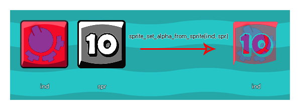

sprite_set_alpha_from_sprite(ind, spr);
Argument La description ind L'index de l'image-objet pour changer la carte de transparence de. spr L'index de l'image-objet pour prendre les données de la carte de transparence.
N/A
Cette fonction utilise la valeur / saturation d'une image-objet et la multiplie avec l'alpha de l'image-objet cible. Idéalement, le sprite utilisé pour générer la nouvelle carte alpha devrait être en échelle de gris, les zones blanches ayant une valeur alpha équivalente à 1 (opaque), les zones noires étant équivalentes à alpha 0 (transparent) et les zones grises étant alpha en entre 0 et 1. Le sprite que vous définissez l'alpha de ne peut pas être une ressource permanente, ni l'image-objet que vous utilisez pour définir l'alpha, car cela donnera une erreur. Cela signifie que vous devez créer deux sprites complètement nouveaux "à la volée" d'une manière ou d'une autre pour que la fonction fonctionne correctement. Cela peut être réalisé en utilisant des surfaces, ou en créant un sprite à partir de l'écran (l'exemple de code ci-dessous montre comment l'effet peut être obtenu avec des surfaces).
REMARQUE: cette fonction n'est utile que pour les images- objets bitmap et ne fonctionnera pas avec les images-objets SWF ou JSON (Spine).
Voici une image qui illustre le fonctionnement de cette fonction: 
Dans cet exemple étendu, nous montrons comment créer un sprite à effets spéciaux à partir de deux ressources sprites. Pour commencer, nous devons avoir une variable de contrôleur dans l' événement de création de l'instance. Cette variable permet de s'assurer que l'image-objet est créée une seule fois:
spr_create = true;
Une fois cela fait, nous devons ensuite aller à l' événement Draw et ajouter ce code:
if spr_create
{
spr_create = false;
var surf, spr;
surf =
surface_create(sprite_get_width(spr_Explosion_Alpha),
sprite_get_height(spr_Explosion_Alpha));
surface_set_target(surf);
draw_clear_alpha(c_black, 0);
draw_sprite(spr_Gradient, 0, 0, 0);
sprite_index = sprite_create_from_surface(surf,
0, 0, sprite_width, sprite_height, false, false,
sprite_get_xoffset(spr_Gradient),
sprite_get_xoffset(spr_Gradient));
draw_clear_alpha(c_black, 0);
draw_sprite(spr_Explosion_Alpha, 0,
sprite_get_xoffset(spr_Gradient),
sprite_get_xoffset(spr_Gradient));
spr = sprite_create_from_surface(surf, 0, 0,
sprite_width, sprite_height, false, false,
sprite_get_xoffset(spr_Gradient),
sprite_get_xoffset(spr_Gradient));
surface_reset_target();
surface_free(surf);
sprite_set_alpha_from_sprite(sprite_index,
spr);
sprite_delete(spr);
}
draw_sprite(sprite_index, 0, x, y);
Le code ci-dessus vérifie d'abord si la variable de contrôle est vraie ou non, et si c'est le cas, il exécute le code pour définir l'alpha de l'image-objet, définissant la variable sur false pour empêcher le code de s'exécuter plus d'une fois. Dans ce cas, elle crée une surface de la taille du masque alpha que nous souhaitons utiliser, puis dessine l'image-objet dont l'alpha doit être modifié sur la surface et crée une nouvelle image-objet à partir de celle-ci, en l'affectant comme sprite_index de l'objet. Le code efface ensuite la surface et dessine l'image-objet de la map alpha et crée un autre nouveau sprite, stockant son index dans une variable locale. Enfin, le nouveau sprite assigné à l'objet obtient son ensemble alpha de ce sprite temporaire, la surface est libérée et le sprite temporaire est supprimé.
Il y a une dernière chose à faire ici, et supprimer le sprite créé pour l'objet de la mémoire lorsqu'il n'est pas utilisé. Cela serait soit fait dans l' événement Destroy ou l' événement End Room comme ceci:
sprite_delete(sprite_index);